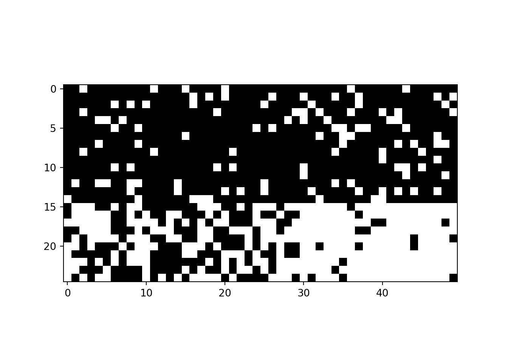
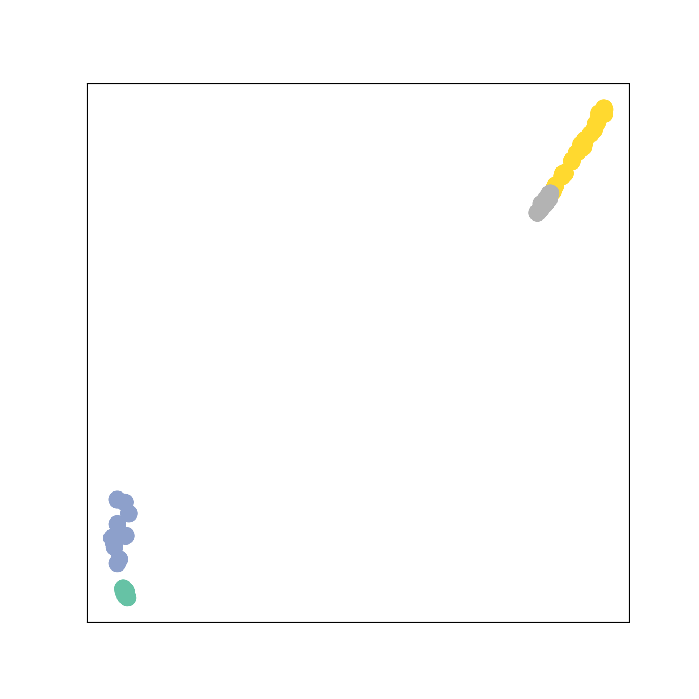
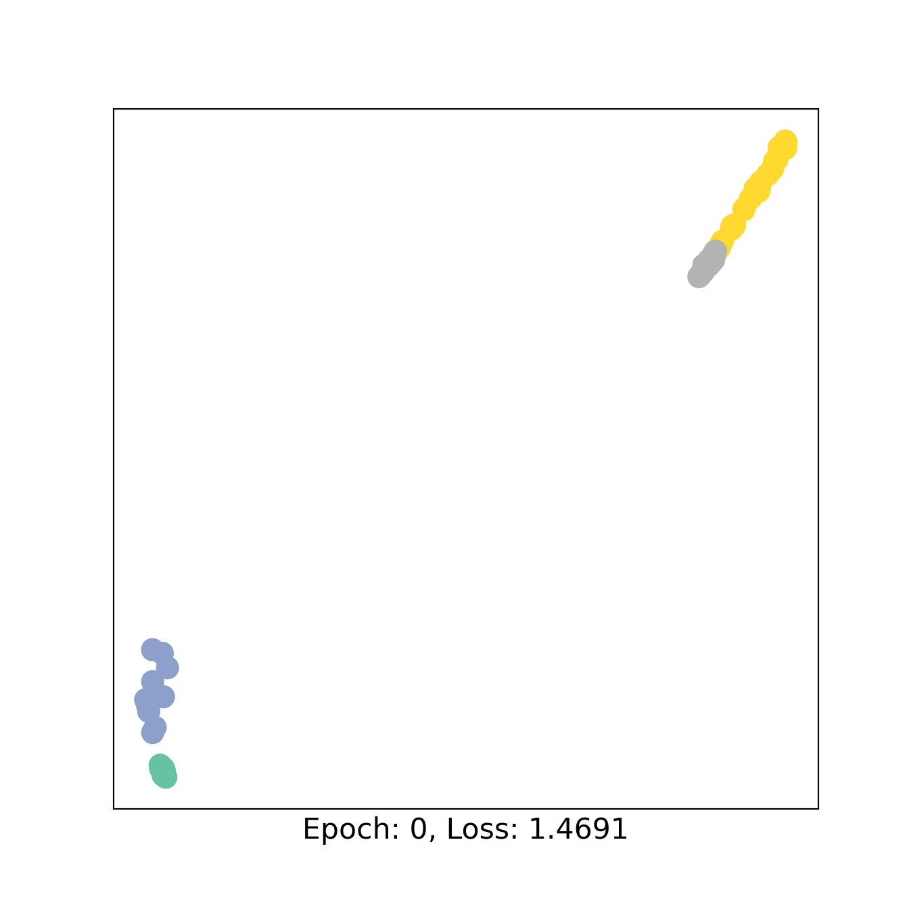
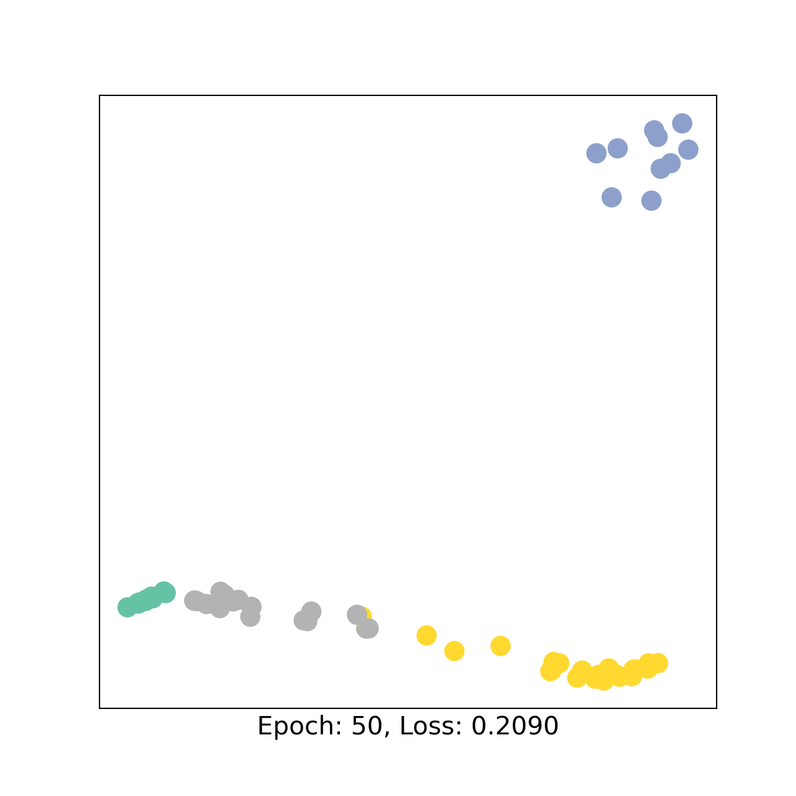
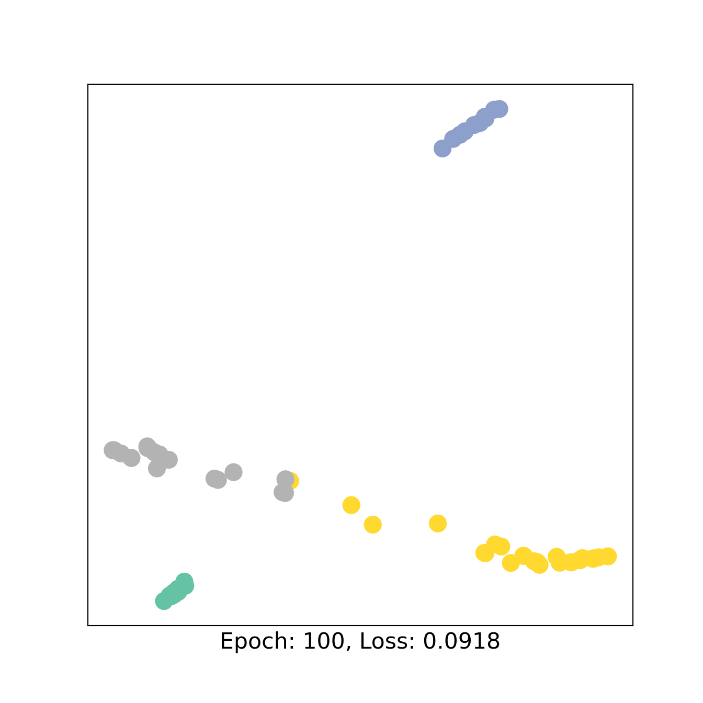

library(reticulate)Graph Neural Networks for bipartite graphs with pytorch_geometric
1 Graph class
The notebook shows a classical use of the package pytorch_numeric which develops Graph Neural Networks based on the logics of pytorch.
Here we show a basic graph with the library networkx.
We use the dataset KarateClub() which is organized as the typical object used by pytorch_geometric: it is a list of graphs where each graph must have an object x, that represents the features of the nodes, and an object edge_index, a 2-row tensor which defines the links between the nodes (plus other possible information about the graph).
import torch
import networkx as nx
import matplotlib.pyplot as plt
import numpy as np
def visualize_graph(G, color):
plt.figure(figsize=(7,7))
plt.xticks([])
plt.yticks([])
nx.draw_networkx(G, pos=nx.spring_layout(G, seed=42), with_labels=False,
node_color=color, cmap="Set2")
plt.show()
def visualize_embedding(h, color, epoch=None, loss=None):
plt.figure(figsize=(7,7))
plt.xticks([])
plt.yticks([])
h = h.detach().cpu().numpy()
plt.scatter(h[:, 0], h[:, 1], s=140, c=color, cmap="Set2")
if epoch is not None and loss is not None:
plt.xlabel(f'Epoch: {epoch}, Loss: {loss.item():.4f}', fontsize=16)
plt.show()
from torch_geometric.datasets import KarateClub
dataset = KarateClub()
print(f'Dataset: {dataset}:')Dataset: KarateClub():print(f'Number of graphs: {len(dataset)}')Number of graphs: 1print(f'Number of features: {dataset.num_features}')Number of features: 34print(f'Number of classes: {dataset.num_classes}')Number of classes: 4data = dataset[0] # Get the first graph object.
print(data)Data(x=[34, 34], edge_index=[2, 156], y=[34], train_mask=[34])# Gather some statistics about the graph.
print(f'Number of nodes: {data.num_nodes}')Number of nodes: 34print(f'Number of edges: {data.num_edges}')Number of edges: 156print(f'Average node degree: {data.num_edges / data.num_nodes:.2f}')Average node degree: 4.59print(f'Number of training nodes: {data.train_mask.sum()}')Number of training nodes: 4print(f'Training node label rate: {int(data.train_mask.sum()) / data.num_nodes:.2f}')Training node label rate: 0.12print(f'Has isolated nodes: {data.has_isolated_nodes()}')Has isolated nodes: Falseprint(f'Has self-loops: {data.has_self_loops()}')Has self-loops: Falseprint(f'Is undirected: {data.is_undirected()}')Is undirected: Trueedge_index = data.edge_index # the objet to give to torch_geometric, along with the features
print(edge_index)tensor([[ 0, 0, 0, 0, 0, 0, 0, 0, 0, 0, 0, 0, 0, 0, 0, 0, 1, 1,
1, 1, 1, 1, 1, 1, 1, 2, 2, 2, 2, 2, 2, 2, 2, 2, 2, 3,
3, 3, 3, 3, 3, 4, 4, 4, 5, 5, 5, 5, 6, 6, 6, 6, 7, 7,
7, 7, 8, 8, 8, 8, 8, 9, 9, 10, 10, 10, 11, 12, 12, 13, 13, 13,
13, 13, 14, 14, 15, 15, 16, 16, 17, 17, 18, 18, 19, 19, 19, 20, 20, 21,
21, 22, 22, 23, 23, 23, 23, 23, 24, 24, 24, 25, 25, 25, 26, 26, 27, 27,
27, 27, 28, 28, 28, 29, 29, 29, 29, 30, 30, 30, 30, 31, 31, 31, 31, 31,
31, 32, 32, 32, 32, 32, 32, 32, 32, 32, 32, 32, 32, 33, 33, 33, 33, 33,
33, 33, 33, 33, 33, 33, 33, 33, 33, 33, 33, 33],
[ 1, 2, 3, 4, 5, 6, 7, 8, 10, 11, 12, 13, 17, 19, 21, 31, 0, 2,
3, 7, 13, 17, 19, 21, 30, 0, 1, 3, 7, 8, 9, 13, 27, 28, 32, 0,
1, 2, 7, 12, 13, 0, 6, 10, 0, 6, 10, 16, 0, 4, 5, 16, 0, 1,
2, 3, 0, 2, 30, 32, 33, 2, 33, 0, 4, 5, 0, 0, 3, 0, 1, 2,
3, 33, 32, 33, 32, 33, 5, 6, 0, 1, 32, 33, 0, 1, 33, 32, 33, 0,
1, 32, 33, 25, 27, 29, 32, 33, 25, 27, 31, 23, 24, 31, 29, 33, 2, 23,
24, 33, 2, 31, 33, 23, 26, 32, 33, 1, 8, 32, 33, 0, 24, 25, 28, 32,
33, 2, 8, 14, 15, 18, 20, 22, 23, 29, 30, 31, 33, 8, 9, 13, 14, 15,
18, 19, 20, 22, 23, 26, 27, 28, 29, 30, 31, 32]])from torch_geometric.utils import to_networkx
G = to_networkx(data, to_undirected=True)
visualize_graph(G, color=data.y)2 Unipartite GNN
We create the architecture of the GNN for a unipartite graph. The architecture is made of a list of graph convolutional layers (GCL, chosen among a list of possible types of convolutions) and a MLP as last layer, which performs the learning task (node classification here). All the layers are followed by an activation function.
Possible types of graph convolutional layers
The init size of the first layer is the number of features and the output size of the last layer depends on the learning task.
Each GCL is defined as a function of two parameters : input size and output size. When defining the forward function, the GCL is called with two input parameters : x and edge_index.
We show the embedding (after the GCLs and before the MLP) after one pass forward to control that no error occurs.
from torch.nn import Linear
from torch_geometric.nn import GCNConv
class GCN(torch.nn.Module):
def __init__(self):
super().__init__()
torch.manual_seed(1234)
self.conv1 = GCNConv(dataset.num_features, 4) # num_features here is 34 (because of identity matrix), but can be 1 (for example with degree of nodes)
self.conv2 = GCNConv(4, 4)
self.conv3 = GCNConv(4, 2)
self.classifier = Linear(2, dataset.num_classes)
def forward(self, x, edge_index): # here the two objects needed by pytorch_geometric
h = self.conv1(x, edge_index)
h = h.tanh()
h = self.conv2(h, edge_index)
h = h.tanh()
h = self.conv3(h, edge_index)
h = h.tanh() # Final GNN embedding space.
# Apply a final (linear) classifier.
out = self.classifier(h)
return out, h
model = GCN()
print(model)GCN(
(conv1): GCNConv(34, 4)
(conv2): GCNConv(4, 4)
(conv3): GCNConv(4, 2)
(classifier): Linear(in_features=2, out_features=4, bias=True)
)_, h = model(data.x, data.edge_index)
print(f'Embedding shape: {list(h.shape)}')Embedding shape: [34, 2]visualize_embedding(h, color=data.y)We then train the model with using the classical pytorch workflow defining a loss (here Cross Entropy), an optimizer (here Adam) and the number of epochs (here 151). We show the embedding every 50 epochs.
import time
# Exactly the same as in torch
criterion = torch.nn.CrossEntropyLoss() # Define loss criterion --> for classification.
optimizer = torch.optim.Adam(model.parameters(), lr=0.01) # Define optimizer.
def train(data):
optimizer.zero_grad() # Clear gradients.
out, h = model(data.x, data.edge_index) # Perform a single forward pass.
loss = criterion(out[data.train_mask], data.y[data.train_mask]) # Compute the loss solely based on the training nodes.
loss.backward() # Derive gradients.
optimizer.step() # Update parameters based on gradients.
return loss, h
for epoch in range(151):
loss, h = train(data)
if epoch % 50 == 0:
visualize_embedding(h, color=data.y, epoch=epoch, loss=loss)
time.sleep(0.3)3 Bipartite GNN
Tu generalize GNN to bipartite graphs, we first need to define the type of data as BipartiteData which inherits from Data. The two types of nodes will be called source nodes and target nodes. The new object creates the source nodes and target nodes with their respective features (x_s and x_t), possibly different in size. The 2 rows in edges_index correspond to the source and target nodes, respectively.
from torch_geometric.data import Data
from torch_geometric.loader import DataLoader
from torch_geometric.nn import SAGEConv
class BipartiteData(Data):
def __inc__(self, key, value, *args, **kwargs):
if key == 'edge_index':
return torch.tensor([[self.x_s.size(0)], [self.x_t.size(0)]]) # source and target (two classes of bipartite graph)
return super().__inc__(key, value, *args, **kwargs)
x_s = torch.randn(2, 4) # 2 nodes, 4 features.
x_t = torch.randn(3, 2) # 3 nodes, 2 features.
edge_index = torch.tensor([
[0, 0, 1, 1],
[0, 1, 1, 2],
])
data = BipartiteData(x_s=x_s, x_t=x_t, edge_index=edge_index)
# Plot of graph
edge_list = list(zip(edge_index[0].tolist(),(edge_index[1]+1+max(edge_index[0])).tolist()))
G=nx.from_edgelist(edge_list)
nx.draw_networkx(G, pos=nx.bipartite_layout(G,edge_index[0].tolist(),aspect_ratio=2), with_labels=False)The convolution layer is directed, hence it must be defined with the tuple of feature size of source and target nodes and the size of output of the layer, which will be given as new features to the nodes of the target.
We call the function with the tuple of features (x_s, x_t) and the `edge_index`.
To perform the inverse convolution from the target nodes to the source nodes, we must invert the values of the tuple but also invert the rows in the `edge_index`.
Only some of the GCLs are adapted to this configuration (look at the cheatsheet).
# Direct and inverse convolutions
Conv_s_t = SAGEConv((4,2),7) # num of features is the tuple (s,t) and output is the num of features of target
print(Conv_s_t((x_s,x_t),edge_index))tensor([[ 0.5198, 0.5703, 0.6759, 0.1716, -0.6514, 0.0479, -0.5577],
[-0.0901, 1.5395, 0.3465, 0.0784, -1.5599, 1.1494, -0.5391],
[-1.0943, 0.7638, 0.2591, 0.4076, -0.5398, 0.6612, -2.2322]],
grad_fn=<AddBackward0>)Conv_t_s = SAGEConv((2,4),7,aggr = "max")
print(Conv_t_s((x_t,x_s),edge_index[[1,0]])) # I need to invert the order of edge_indextensor([[-0.4040, 0.4052, -0.1868, 0.9336, 0.0030, 0.6546, 1.0335],
[ 0.5958, -0.1849, 0.2907, 1.4262, -0.9557, 0.4383, 0.6614]],
grad_fn=<AddBackward0>)3.1 Case study
Latent Block Model for classification task
Two groups in sources, two groups in targets, with corresponding probability of connection.
Each node has two features: 1 and its degree.
n1= 25
n2 = 50
W1 = np.random.randint(2,size=n1)
W2 = np.random.randint(2,size=n2)
P = np.array([[0.9,0.8],[0.5,0.1]])
M = P[:,W2][W1,:]
m = np.random.binomial(1, M)
plt.imshow(m[np.argsort(W1),:][:,np.argsort(W2)],cmap="gray_r")<matplotlib.image.AxesImage object at 0x7f7930c2a8f0>edge_index = torch.LongTensor(([np.where(m)[0],np.where(m)[1]]))<string>:2: UserWarning: Creating a tensor from a list of numpy.ndarrays is extremely slow. Please consider converting the list to a single numpy.ndarray with numpy.array() before converting to a tensor. (Triggered internally at ../torch/csrc/utils/tensor_new.cpp:278.)
# 1 (to count for how many neighbors) + degree (random choice, but good when we have no other information on the network)
x_s = torch.Tensor(m.sum(1).reshape(-1,1))
x_s = torch.concat((x_s,torch.ones(x_s.shape[0],1)),1)
x_t = torch.Tensor(m.sum(0).reshape(-1,1))
x_t = torch.concat((x_t,torch.ones(x_t.shape[0],1)),1)
data = Data(x_s=x_s, x_t=x_t, edge_index=edge_index)
We define an architecture for the bipartite GNN.
class BGCN(torch.nn.Module):
def __init__(self):
super().__init__()
torch.manual_seed(1234)
self.conv1 = SAGEConv((x_s.shape[1],x_t.shape[1]),5)
self.conv2 = SAGEConv((x_t.shape[1],x_s.shape[1]),10)
self.conv3 = SAGEConv((5,10), 4)
self.conv4 = SAGEConv((10,5), 4)
self.classifier1 = Linear(4,2)
self.classifier2 = Linear(4,2)
def forward(self, x, edge_index):
x_1,x_2 = x
h1 = self.conv1((x_1,x_2), edge_index) #n2 x 5
h1 = h1.tanh()
h2 = self.conv2((x_2,x_1), edge_index[[1,0]]) #n1 x 10 # invert edge_index for the inverse convolution
h2 = h2.tanh()
h3 = self.conv3((h1,h2), edge_index[[1,0]]) #n1 x 4
h3_2 = h3.tanh()
h4 = self.conv4((h2,h1), edge_index) #n2 x 4
h4_2 = h4.tanh() # Final GNN embedding space.
# Apply a final (linear) classifier.
out1 = self.classifier1(h3_2) #n1 x 4
out2 = self.classifier2(h4_2) #n2 x 4
return out1,out2, h3,h4
BGCN1 = BGCN()
out1,out2, h3,h4= BGCN1((x_s,x_t),edge_index)
H =torch.concat([h3,h4])
color0 = np.concatenate([W1,W2+2])
visualize_embedding(H, color=color0)
We train the model as above and print the AUC for the classes of sources and targets.
import time
from sklearn.metrics import roc_auc_score
from sklearn.model_selection import train_test_split
criterion = torch.nn.CrossEntropyLoss() # Define loss criterion.
optimizer = torch.optim.Adam(BGCN1.parameters(), lr=0.01) # Define optimizer.
train_mask,test_mask = train_test_split(np.arange(n1),test_size = 0.2,stratify = W1)
train_mask2,test_mask2 = train_test_split(np.arange(n2),test_size = 0.2,stratify = W2)
def train():
optimizer.zero_grad() # Clear gradients.
out1,out2, h3,h4= BGCN1((x_s,x_t),edge_index) # Perform a single forward pass.
loss1 = criterion(out1[train_mask], torch.LongTensor(W1)[train_mask]) # Compute the loss solely based on the training nodes.
loss2 = criterion(out2[train_mask2], torch.LongTensor(W2)[train_mask2])
loss = loss1+loss2
loss.backward() # Derive gradients.
optimizer.step() # Update parameters based on gradients.
return loss,out1,out2, h3,h4
for epoch in range(101):
loss,out1,out2, h3,h4 = train()
if epoch % 50 == 0:
H =torch.concat([h3,h4])
color0 = np.concatenate([W1,W2+2])
visualize_embedding(H, color=color0, epoch=epoch, loss=loss)
time.sleep(0.3)


y_pred1 = out1[test_mask].argmax(1).detach().numpy()
y_pred2 = out2[test_mask2].argmax(1).detach().numpy()
print("AUC 1 : ",roc_auc_score(W1[test_mask],y_pred1))AUC 1 : 1.0print("AUC 2 : ",roc_auc_score(W2[test_mask2],y_pred2))AUC 2 : 0.8754 Mini-batches for pooling operation in GNNs
The function DataLoader called with a list of graphs and the parameter batch_size creates a new UNCONNECTED graph with the as many different graphs as given in batch_size.
Often, it is useful to be able to distinguish nodes from one graph to the other for different objectives such as graph classification. To keep track of which nodes belong to which graph, we can use batch.batch, that returns a vector of indices pairing each target node to its graph.
from torch_geometric.nn import pool
from torch_geometric.loader import DataLoader
x_s = torch.randn(2, 16) # 2 nodes.
x_t = torch.randn(3, 10) # 3 nodes.
edge_index = torch.tensor([
[0, 0, 1, 1],
[0, 1, 1, 2],
])
data = BipartiteData(x_s=x_s, x_t=x_t, edge_index=edge_index,num_nodes = x_t.shape[0])
data_list = [data, data, data, data, data, data] # 6 identical graphs (but can be different in size, features, ...
loader = DataLoader(data_list, batch_size=3) # the dataloader creates a new UNCONNECTED graph with the 3 different graphs
batch = next(iter(loader))
print("batch ", batch)batch BipartiteDataBatch(edge_index=[2, 12], x_s=[6, 16], x_t=[9, 10], num_nodes=9, batch=[9], ptr=[4])print("edge_index ", batch.edge_index)edge_index tensor([[0, 0, 1, 1, 2, 2, 3, 3, 4, 4, 5, 5],
[0, 1, 1, 2, 3, 4, 4, 5, 6, 7, 7, 8]])print("node index ", batch.batch) # these are batches for target nodes (ONLY), vector of indexesnode index tensor([0, 0, 0, 1, 1, 1, 2, 2, 2])edge_list = list(zip(batch.edge_index[0].tolist(),(batch.edge_index[1]+1+max(batch.edge_index[0])).tolist()))
G=nx.from_edgelist(edge_list)
nx.draw_networkx(G, pos=nx.bipartite_layout(G,batch.edge_index[0].tolist(),aspect_ratio=2), with_labels=False)If we want to pair also the source nodes, we can use the following code.
# code for creating batches for source nodes, vector of indexes
batch_s = torch.cat([torch.full((data.x_s.size(0),), i, dtype=torch.long) for i, data in enumerate(batch.to_data_list())])
print(pool.global_add_pool(batch.x_t,batch.batch).shape)torch.Size([3, 10])print(pool.global_add_pool(batch.x_s,batch_s).shape)torch.Size([3, 16])4.1 Real case study
Data are a list of interactions between plants and insects collected from different studies. We also know how data were collected for each study : Transect or Timed observation. This information is encoded in the boolean TO (= 1 for Timed observation). The objective is to retrieve the variable TO from the networks (graph classification).
#%% Exemple on real dataset
import pandas as pandas
from sknetwork.data import from_edge_list
from torch_geometric.utils import degree
from sklearn.model_selection import train_test_split
Networks = pandas.read_csv("Interaction data Mael.txt", encoding="latin-1",sep="\t")
Networks["plant"] = Networks['plantgenus'] + "_"+ Networks['plantspecies']
Networks["insects"] = Networks["insectgenus"]+ "_"+ Networks["insectspecies"]
supinfo = pandas.read_excel("supinfo.xlsx",1)
#torch.Tensor((supinfo[supinfo["Idweb"]==k]["Sampling_type"]=="TO").values*1)
data_list = []
id_network_aggreg= Networks["id_network_aggreg"].unique()
for k in id_network_aggreg:
Networks2 =Networks[["plant","insects"]][Networks["id_network_aggreg"]==k]
graph = from_edge_list(edge_list=list(Networks2.itertuples(index=False)),bipartite=True)
biadjacency = graph.biadjacency.tocoo()
edge_index = torch.LongTensor([graph.biadjacency.tocoo().row,graph.biadjacency.tocoo().col])
TO = torch.Tensor((supinfo[supinfo["Idweb"]==k]["Sampling_type"]=="TO").values)*1
# we can add arguments in the function to add for example the class of the graph
data = BipartiteData(x_s=degree(edge_index[0],num_nodes=biadjacency.shape[0]).reshape(-1,1),
x_t=degree(edge_index[1],num_nodes=biadjacency.shape[1]).reshape(-1,1),
edge_index=edge_index,
TO = TO,
num_nodes =biadjacency.shape[1] ) # number of tartet nodes
data_list.append(data)
print(data_list[0])BipartiteData(edge_index=[2, 544], x_s=[131, 1], x_t=[113, 1], TO=[1], num_nodes=113)print("data_list len : ", len(data_list))data_list len : 123We define the model architecture. Poolings layers are described here.
We add a pooling layer between the CGLs and the MLP in order to agregate the features from target nodes belonging to the same graph in one feature vector for each graph.
The pooling is made thanks to the indices vector batch.batch.
from torch_geometric.nn import GATConv
class BGCN(torch.nn.Module):
def __init__(self):
super().__init__()
torch.manual_seed(1234)
self.conv1 = GATConv((1,1),5)
self.conv2 = SAGEConv((1,1),10)
self.conv3 = SAGEConv((self.conv2.out_channels,self.conv1.out_channels), 4)
self.classifier1 = Linear(9,15) # 9 because 5 + 4 in the concatanation of h1 and h3
self.classifier2 = Linear(15,10)
self.classifier3 = Linear(10,1)
self.ReLU = torch.nn.ReLU()
def forward(self, x, edge_index,batch): # batch is given here as input
x_1,x_2 = x
h1 = self.conv1((x_1,x_2), edge_index)
h1 = h1.tanh()
h2 = self.conv2((x_2,x_1), edge_index[[1,0]])
h2 = h2.tanh()
h3 = self.conv3((h2,h1), edge_index)
h4 = torch.concat([h1,h3],1) # concatenation in order to have only targets and use batch as indexes
#H = pool.global_add_pool(h4,batch) ##Pooling layer !
#H = pool.global_mean_pool(h4,batch)
H = pool.global_max_pool(h4,batch) # the pooling is made graph after graph (thanks to the argument batch)
H1 = self.classifier1(H)
H1 = self.ReLU(H1)
H1 = self.classifier2(H1)
H1 = self.ReLU(H1)
H1 = self.classifier3(H1)
H1 = torch.nn.Sigmoid()(H1)
return H1
loader = DataLoader(data_list, batch_size=10)
batch = next(iter(loader))
print(x_t.shape)torch.Size([3, 10])print(batch.batch.shape)torch.Size([1355])
BGCN2 = BGCN()
batch_s = torch.cat([torch.full((data.x_s.size(0),), i, dtype=torch.long) for i, data in enumerate(batch.to_data_list())])
H=BGCN2((batch.x_s,batch.x_t),batch.edge_index,batch.batch) # don't forget the argument batch.batch (on targets)We train the model and show the AUC.
y=[x.TO.item() for x in data_list]
data_train,data_test =train_test_split(data_list,stratify = y,test_size = 0.2,random_state=5)
from tqdm import tqdm
BGCN2 = BGCN()
criterion = torch.nn.BCELoss() # Binary Cross Entropy
optimizer = torch.optim.Adam(BGCN2.parameters(), lr=0.01) # Define optimizer.
loader = DataLoader(data_train, batch_size=10)
loss_list = []
for K in tqdm(range(20)):
for batch in loader:
optimizer.zero_grad() # Clear gradients.
H=BGCN2((batch.x_s,batch.x_t),batch.edge_index,batch.batch) # Perform a single forward pass.
loss = criterion(H,batch.TO.reshape(-1,1))
loss.backward()
optimizer.step()
loss_list.append(loss.item()) # Derive gradients.
0%| | 0/20 [00:00<?, ?it/s]
15%|#5 | 3/20 [00:00<00:00, 21.40it/s]
30%|### | 6/20 [00:00<00:00, 21.46it/s]
45%|####5 | 9/20 [00:00<00:00, 21.48it/s]
60%|###### | 12/20 [00:00<00:00, 21.38it/s]
75%|#######5 | 15/20 [00:00<00:00, 21.40it/s]
90%|######### | 18/20 [00:00<00:00, 21.39it/s]
100%|##########| 20/20 [00:00<00:00, 21.42it/s]plt.plot(loss_list)[<matplotlib.lines.Line2D object at 0x7f792bec84c0>]loader_train = DataLoader(data_train, batch_size=len(data_train))
for batch in loader_train:
H=BGCN2((batch.x_s,batch.x_t),batch.edge_index,batch.batch)
print("AUC train ",roc_auc_score(batch.TO.numpy(),H.detach().numpy()))AUC train 0.7997448979591836
loader_test = DataLoader(data_test, batch_size=len(data_test))
for batch in loader_test:
H=BGCN2((batch.x_s,batch.x_t),batch.edge_index,batch.batch)
print("AUC test ",roc_auc_score(batch.TO.numpy(),H.detach().numpy()))AUC test 0.6753246753246753